Bluetooth Bee is an easy to use Bluetooth SPP module compatible with existing Xbee sockets, designed for transparent wireless serial connection setup.
Serial port Bluetooth module is fully qualified Bluetooth V2.0+EDR(Enhanced Data Rate) 3Mbps Modulation with complete 2.4GHz radio transceiver and baseband.
It uses CSR Bluecore 04-External single chip Bluetooth system with CMOS technology and with AFH(Adaptive Frequency Hopping Feature).It even has the smallest footprint
as small as 12.7mmx27mm. Hope it will simplify your overall design/development cycle.
The supply voltage of this module is 3.3V, higher than this may cause permanent damage to the device.
The Bluetooth provides a standard XBee socket. In here we use a UartSBee V5 to connect Bluetooth and PC, ensure the supply voltage was selected as 3.3V by slider.
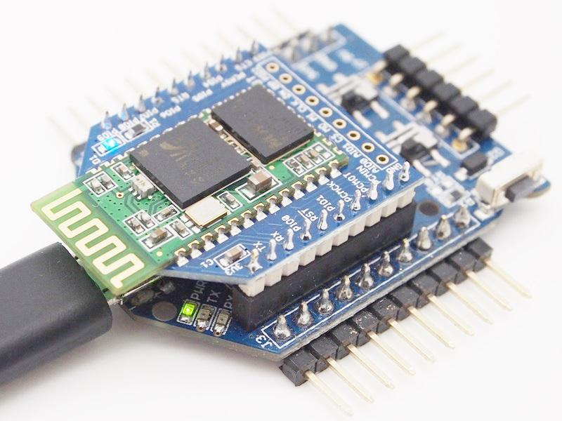
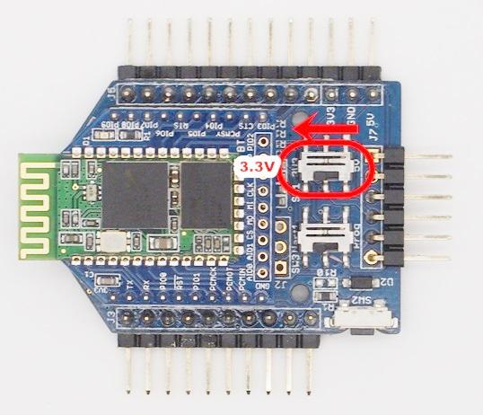
Here we use XBee Shield as a bridge between Bluetooth and Seeeduino Lotus.
Since the hardware UART of Seeedino was used as debug with PC, We choose D2 and D3 to simulate software UART to communicate with Bluetooth. please refer to the jumper setting on below picture
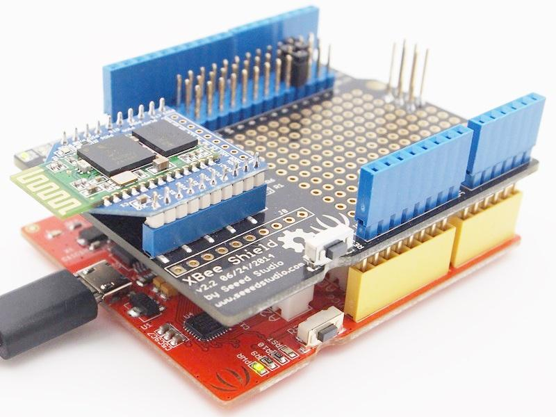
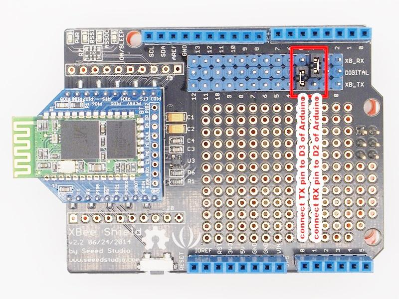
1. Test Command
| Send | Receive | Parameter |
|---|---|---|
| AT | OK | None |
2. Query/Set baud rate
| Send | Receive | Parameter |
|---|---|---|
| AT+BAUD? | OK+Set:[para1] | Para1: Baud rate No. 1---------1200 |
| AT+BAUD[para1] | OK+Set:[para1] |
3. Query/Set Parity bit
| Send | Receive | Parameter |
|---|---|---|
| Query: AT+CHK? | OK+CHK:[para1] | Para1: 0,1,2 0:None |
| Set: AT+CHK[para1] | OK+Set:[para1] |
4. Query/Set Stop bit
| Send | Receive | Parameter |
|---|---|---|
| AT+STOP? | OK+STOP:[para1] | Para1:1, 2 1: One stop bit |
| AT+STOP[para1] | OK+Set:[para1] |
5. Query/Set Baud rate, parity bit, stop bit
| Send | Receive | Parameter |
|---|---|---|
| AT+UART? | OK+UART:[para1],[para2],[para3] | Para1: Baud rate Value: 1~C |
| AT+UART[para1][para2][para3] | OK+Set:[para1] [para2] [para3] |
6. Module self check command
| Send | Receive | Parameter |
|---|---|---|
| AT+SECH? | OK+SECH:OKAY or OK+SECH:FAIL |
None |
7. Module application sectors check command
| Send | Receive | Parameter |
|---|---|---|
| AT+APCH? | OK+APCH:OKAY or OK+APCH:FAIL |
None |
8. Query module temperature command
| Send | Receive | Parameter |
|---|---|---|
| AT+TEMP? | OK+TEMP:[temp value] | None |
9. Query/Set module discoverable status
| Send | Receive | Parameter |
|---|---|---|
| AT+DISC? | OK+DISC:[para1] | Para1: 0,1,2 0: discoverable and connectable |
| AT+DISC [para1] | OK+Set:[para1] |
10. Query/Set PIO0 function (System KEY)
| Send | Receive | Parameter |
|---|---|---|
| AT+KEY? | OK+KEY:[para1] | Para1: 0, 1 0: Cancel current status. |
| AT+ KEY[para1] | OK+Set:[para1] |
11. Query/Set PIO1 output status (System LED)
| Send | Receive | Parameter |
|---|---|---|
| AT+LED? | OK+LED:[para1] | Para1: 0, 1 0:Unconnected Output 500ms High 500ms Low, Connected output High. |
| AT+ LED [para1] | OK+Set:[para1] |
12. Query/Set module PIO Pins output status
| Send | Receive | Parameter |
|---|---|---|
| AT+PIO? | OK+PIO:[para1] | Para1: Length 10, every bit value is 1 or 0. 0: output low; 1:output high |
| AT+PIO[para1] | OK+Set:[para1] |
13. Query/Set PIO pins output high or low
| Send | Receive | Parameter |
|---|---|---|
| AT+PIO[para1]? | OK+PIO:[para1][para2] | Para1: 2~B Para2: 0, 1 Para1 is which PIO pin you want to Query/Set Value:2,3,4,5,6,7,8,9,A,B. |
| AT+PIO[para1][para2] | OK+Set:[para1][para2] |
14. Query/Set Module name
| Send | Receive | Parameter |
|---|---|---|
| AT+NAME? | OK+NAME[para1] | Para1: module name,Max length is 12. Default: HMSoft |
| AT+NAME[para1] | OK+Set[para1] |
15. Restore all setup value to factory setup
| Send | Receive | Parameter |
|---|---|---|
| AT+DEFAULT | OK+DEFAULT | None |
16. Restart module
| Send | Receive | Parameter |
|---|---|---|
| AT+RESTART | OK+RESTART | None |
17.Query/Set Master and Slaver Role
| Send | Receive | Parameter |
|---|---|---|
| AT+ROLE? | OK+ROLE:[para1] | Para1: M, S M: Master |
| AT+ROLE[para1] | OK+Set:[para1] |
18. Query/Set Pin Code
| Send | Receive | Parameter |
|---|---|---|
| AT+PIN? | OK+PIN:[para1] | Para1 is Pin Code, Max length is 12, Allow A~Z, a~z, 0~9 Default: 1234 |
| AT+PIN[para1] | OK+Set:[para1] |
19. Clear Connected device address
| Send | Receive | Parameter |
|---|---|---|
| AT+CLEAR | OK+CLEAR | None |
20. Scan slave device
| Send | Receive | Parameter |
|---|---|---|
| AT+SCAN? | OK+SCANS OK+SCAN[MAC] |
None |
21. Connect to a slave device MAC address
| Send | Receive | Parameter |
|---|---|---|
| AT+LNK[para1] | OK+CONNS(start conn) OK+CONN(conn ok) |
Para1 is MAC Address string. |
22.Query Software Version
| Send | Receive | Parameter |
|---|---|---|
| AT+VERSION AT+VERSION? |
Version Information | None |
23.System Help Information
| Send | Receive | Parameter |
|---|---|---|
| AT+HELP? | Help Information | None |
24. Query Last Connected Device Address
| Send | Receive | Parameter |
|---|---|---|
| AT+RADD? | OK+ADDR:MAC Address | None |
25. Query module address
| Send | Receive | Parameter |
|---|---|---|
| AT+LADD? AT+ADDR? |
OK+LADD:MAC Address | None |
26. Query/Set Module work type
| Send | Receive | Parameter |
|---|---|---|
| AT+IMME? | OOK+IMME:[para1] | Para1: 0, 1 0: When module is powered on, only respond the AT Command, don’t do anything. until AT + WORK is received |
| AT+IMME[para1] | OK+Set:[para1] |
27. Work immediately
| Send | Receive | Parameter |
|---|---|---|
| AT+WORK | OK+WORK | None |
28. Query/Set module connect remote device timeout value
| Send | Receive | Parameter |
|---|---|---|
| AT+TCON? | OK+TCON:[para1] | Para1 is timeout value. when time is up module will not connect this address anymore, then enter search mode. Para1 allowed value: 0000~9999 Unit is second. |
| AT+TCON[para1] | OK+Set:[para1] |
27. Work immediately
| Send | Receive | Parameter |
|---|---|---|
| AT+WORK | OK+WORK | None |
29 .Query/Set Module Work Mode
| Send | Receive | Parameter |
|---|---|---|
| AT+TYPE? | OK+TYPE:[para1] | Para1: 0~2 0:Transmission Mode |
| AT+TYPE[para1] | OK+Set:[para1] |
30. Query/Set report PIO states string delay time(unit ms)
| Send | Receive | Parameter |
|---|---|---|
| AT+TPIO? | OK+TPIO:[para1] | Para1 value is between 0000 and 9999 ms If value >0, when PIO states is changed, module will send PIO states string to remote device delay this value. Default: 0 send once |
| AT+TPIO[para1] | OK+Set:[para1] |
31. Switch Remote Control Mode to Transmission Mode(Only this time)
| Send | Receive | Parameter |
|---|---|---|
| AT+START | OK+START | None |
32. Query/Set Buffer save parameter
| Send | Receive | Parameter |
|---|---|---|
| AT+BUFF? | OK+BUFF:[para1] | None |
| AT+BUFF[para1] | OK+Set:[para1] | Para1: 0~1 0: Not save |
33. Query/Set Search Filter
| Send | Receive | Parameter |
|---|---|---|
| AT+FILT? | OK+FILT:[para1] | Para1: Allow Type Value: 0~C |
| AT+FILT[para1] | OK+Set:[para1] |
34. Query/Set Module Notification
| Send | Receive | Parameter |
|---|---|---|
| AT+NOTI? | OK+NOTI:[para1] | None |
| AT+NOTI[para1] | OK+Set:[para1] | Par1 value is 0, 1. 0: Don’t notify(default) |
35.Query/Set Module Class Of Device
| Send | Receive | Parameter |
|---|---|---|
| AT+COD? | OK+COD:[para1] | None |
| AT+COD[para1] | OK+Set:[para1] | Par1 is COD value. Value: 0000~0xFFFF |
This section shows how to configure Bluetooth with PC, some basic methods of setting could be learn.
Set up hardware connection refer to “Hardware Installation” section. You will find the blue LED on the module flashes illustrate no connection is set up.
Open a serial terminal and set Baud Rate:9600, Databits: 8, Stopbits: 1 and No Flow Control. Send “AT” to Bluetooth with the serial terminal and “OK” will be return if all goes well. The Bluetooth only respond AT commands when no connection was set up, or all commands were seen as string and sent out. You can distinguish the status through LED indicates.
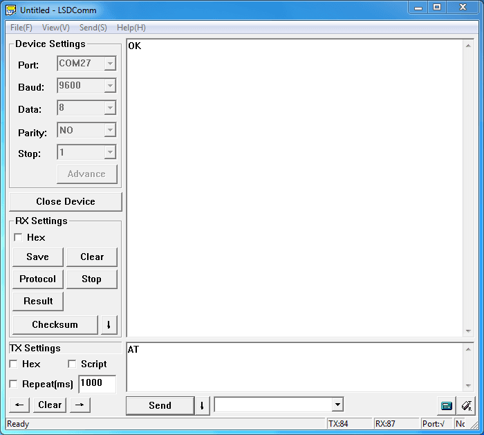
Then some useful configurations could be sent. Here’s are some samples of commands and response.
1. Test serial connection, send “AT”, will return “OK”.
2. Obtain firmware version, send “AT+VERSION?”, return “OK+VERSION:HMSoft V621”.
3. Restore factory settings, send “AT+DEFAULT”, return “OK+DEFAULT”.
4. Restart module, send “AT+RESTART”, return ”OK+RESTART”.
5. Reset baud rate of serial port, send “AT+BAUD4”, return “OK+Set:9600”.
6. Enable authentication, send “AT+AUTH1”, return “OK+SetAuth:1”.
7. Query module address , send “AT+LADD?”, return “OK+LADD:000EEACF1A57”.
8. Query Last Connected Device Address , send “AT+RADD?”, return “OK+RADD:000000000000”.
9. Set Module name, send “AT+NAMEHM-01”, return “OK+Set:HM-01”.
10. Set Pin Code, send “AT+PIN8888”, return “OK+SetPin:8888”.
11. Enable notify information of connection, send “AT+NOTI1”, return “OK+Set:1”.
12. Set to master mode, send “AT+ROLEM”, return “OK+Set:M”.
Or Set to Slave mode, send “AT+ROLES”, return “OK+Set:S”.
We use two Bluetooth connected with PC, one was set as Central while the other is Peripheral. Several seconds later they find each other and the LED stop flash, connected!
This kind of Bluetooth module is compatible with Bluetooth Specification V2.1+EDR、V2.0+EDR、V2.1、V2.0, it can communicate with any device has one of these protocols. We use a Android phone to demonstrate how to use a cellphone to interact with Bluetooth module.
Power the module and configure it as Slave role(send “AT+ROLES” to module). Search and install an APP called “Bluetooth SPP pro” in Android phone. Launch the app, it will scan all Bluetooth device automatically. Select “HMSoft” and touch “Connect” button, and then “Byte stream mode”. Then we can send data to PC, write some words in the text field at the bottom of the Phone and hit send button. Also PC can transfer data to phone with serial terminal.
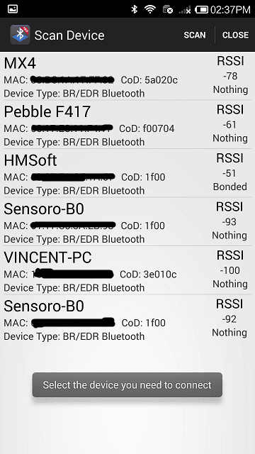
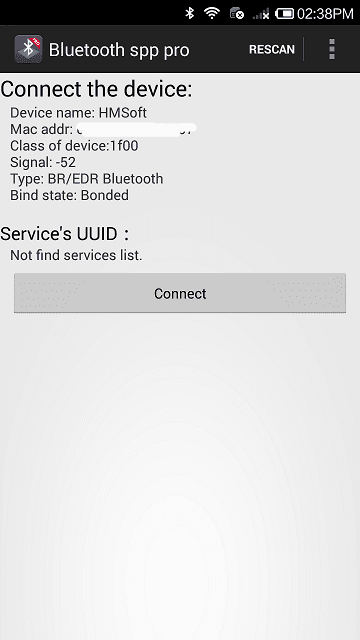
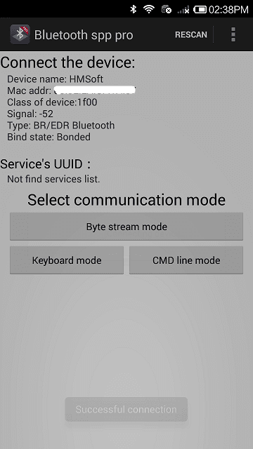
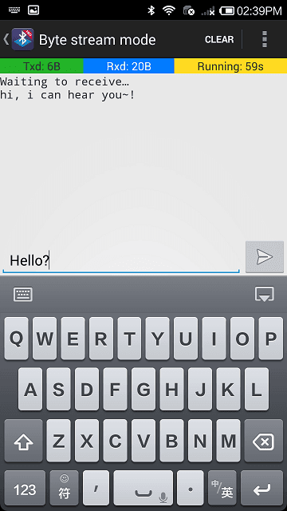
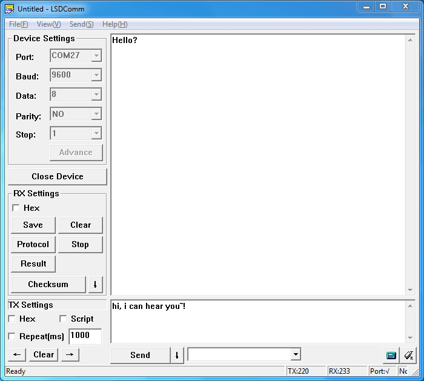
Are you ready to code? It’s time to do something after practice. Prepare a pair of Bluetooth, and Arduino or other platform to control them. Here we use two Arduino Uno. Set up the connection as mentioned in section “Hardware Installation”.
The program of Central and Peripheral use the same code, the only difference is the micro define at the beginning of the program. To assign the Bluetooth to Central role, Just need to modify the text to “#define MASTER 1”, or “#define MASTER 1” if Peripheral role was assigned.
The initialization program flow please refer to the following flow chart. First of all we need to distinguish the presetting baud rate of the Bluetooth. After this, send commands to restore factory settings, and change baud rate from 115200 to 9600 since software serial will not working well at high baud rate. Then other parameters were configured to the Bluetooth with Reset command in the final.
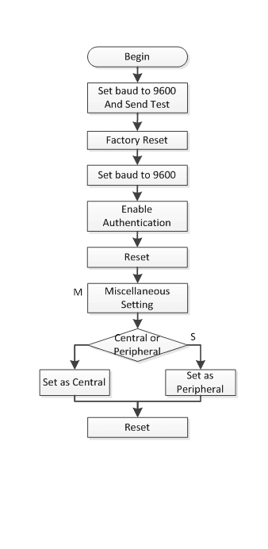
After the initialization, the Central and Peripheral will do different things, the Central will send message to Peripheral interval and print what received from Peripheral while the Peripheral only responds the Central.
Click here to download the test code and open HM-13_SW.ino with Arduino IDE, compile and download to Arduino Uno. Remember to configure the Bluetooth to different role by modify the macro at the beginning. If you have any problem about how to start Arduino, please click here for some help.
After downloading program, open two serial terminal windows, the LEDs on Bluetooth will flash, several seconds later, they stop to flash and keep on, this indicates that they connected to each other. According to the program is written, the Central sends message to the Peripheral continually and get feedback every time.
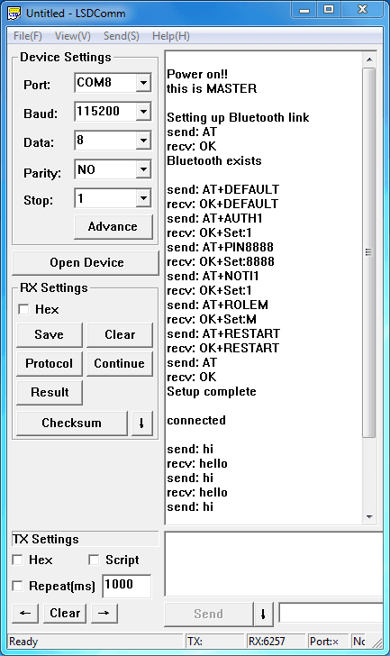
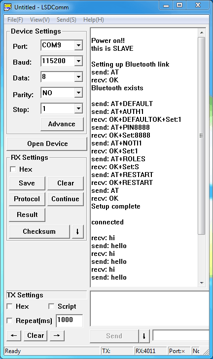
If you have questions or other better design ideas, you can go to our forum or wish to discuss.
Copyright (c) 2008-2016 Seeed Development Limited (www.seeedstudio.com / www.seeed.cc)